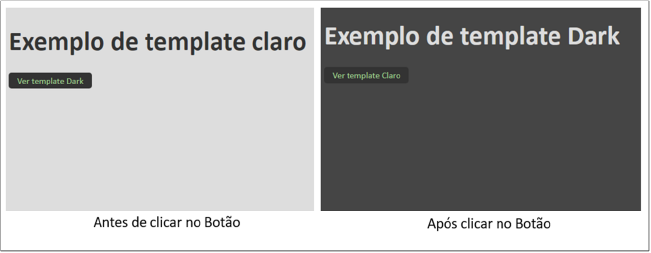

Como sugestão, configure a opção de leitura de caracteres e de pontuação de seu leitor de tela para o grau máximo de leitura, a fim de que os códigos disponibilizados neste material sejam lidos corretamente. No caso do NVDA (Nonvisual Desktop Access), para localizar a opção Grau de pontuação/símbolos, acesse Preferências – Configurações – Fala. Altere o padrão Pouco para Tudo. Dessa forma, o leitor passará a ler os segmentos de código em sua totalidade.
Neste material, você conhecerá uma biblioteca front-end muito utilizada, leve e fácil de se trabalhar, chamada jQuery. O jQuery é uma biblioteca JavaScript lançada em janeiro de 2006. Ao contrário do que muitos pensam, apesar de antiga, ela continua extremamente atual, pois, até o momento, sua última atualização estável ocorreu em 2023 e acaba de ser lançada, em 2024, uma atualização beta (para testes) da nova versão.
O jQuery é uma biblioteca JavaScript rápida, leve e rica em recursos. Ela foi criada para facilitar a manipulação de documentos HTML, o tratamento de eventos, a animação e o desenvolvimento de aplicações web com Ajax muito mais simples, com uma API (application programming interface) fácil de usar e que funciona em praticamente todos os navegadores atuais. Com uma combinação de versatilidade e extensibilidade, o jQuery mudou a forma como milhões de pessoas escrevem o JavaScript.
Lançado em janeiro de 2006 por John Resig, o jQuery rapidamente se tornou uma das ferramentas mais populares para desenvolvedores web, em razão de sua simplicidade e facilidade de uso. Uma das características mais poderosas do jQuery é o uso de seletores CSS (cascading style sheets) para selecionar elementos do DOM (modelo de objeto de documento), permitindo que os desenvolvedores manipulem elementos da página de maneira muito mais eficiente e com menos código em comparação ao JavaScript puro.
Embora nos últimos anos tenha havido um movimento em direção ao uso de frameworks modernos de JavaScript, como Angular, React e Vue.js, o jQuery ainda é amplamente usado em muitos sites e aplicações web em razão de sua simplicidade, eficácia e ampla base de plugins disponíveis.
O jQuery é leve e extensível, oferece suporte a diversos plugins e, atualmente, conta com uma vasta comunidade de programadores que frequentemente acrescentam novos recursos à biblioteca. Além de funções, oferece ao programador uma grande quantidade de controles de interface. O lema do jQuery é “escreva menos e faça mais”, ou seja, ele preza por uma programação cheia de recursos escrevendo pouco código.
Quando o jQuery foi lançado, em 2006, resolvia problemas de compatibilidade entre navegadores e facilidades na hora de selecionar elementos de uma interface, porém, com a evolução do JavaScript, do HTML5 e do CSS3 e até mesmo com as atualizações dos navegadores, os problemas iniciais que o jQuery soluciona quase não existem mais. Isso fez com que se formasse entre os desenvolvedores um humor de que o jQuery já havia “morrido”, ou seja, não fazia mais sentido utilizá-lo. Porém, o jQuery evoluiu nestes últimos anos e ainda se mantém atual, trazendo muitas facilidades ao desenvolver aplicações web, principalmente quando se deseja criar interfaces leves, modernas e cheia de recursos.
A biblioteca jQuery não está defasada, muito pelo contrário, ainda é atualizada constantemente. Atualmente, está na versão 3.7.x, lançada no final de 2023, e em 2024 está marcado o lançamento da versão 4.0.
Começar a utilizar jQuery em seus projetos é muito simples; basta baixá-lo em seu site oficial e integrá-lo ao seu sistema ou site.
Site oficial do jQuery
Fonte: jQuery (c2024)
O print mostra o site oficial do jQuery, com uma interface azul e um botão para baixá-lo.
Ao baixar o jQuery, percebe-se que ele basicamente consiste em um único arquivo de JavaScript, compacto, leve e cheio de recursos. Já que consiste em apenas um arquivo, sua integração torna-se extremamente fácil, bastando incluí-lo no head do seu HTML (hypertext markup language).
Supondo que os arquivos do seu projeto estão na mesma pasta de trabalho e que o jQuery está dentro de uma pasta chamada “JS”, o código para implementá-la será conforme o exemplo:
<script type="text/javascript" src="js/jquery-3.7.1.min.js"></script>
Lembre-se de que o ideal é que esse código esteja dentro da tag head do HTML e que dentro do atributo src deve ir o caminho do arquivo jQuery baixado, ou seja, você deve atualizá-lo conforme a estrutura do seu projeto. Nesse exemplo, js significa o nome da pasta em que está o arquivo e jquery-3.7.1.min.js é o nome do arquivo que contém a biblioteca jQuery.
Após integrar o arquivo do jQuery ao seu projeto, você pode usufruir de toda a sintaxe simplificada e das funcionalidades da biblioteca.
Para garantir que uma função ou um comando só dispare após o completo carregamento da página, usa-se o seletor $ do jQuery seguido da função ready.
Veja um exemplo:
$( document ).ready(function() {
//Aqui vai o seu comando JQuery.
});
Esse código garante que seu comando será disparado após o carregamento completo de todos os recursos da sua página.
A biblioteca jQuery auxilia a manipulação da interface do seu projeto. Então, em muitos casos, será necessário selecionar os elementos aos quais deseja adicionar um estilo ou uma funcionalidade. Quem já tem conhecimento mínimo em CSS, compreenderá de uma forma muito simples as chamadas do jQuery, pois são muito similares à seleção de elementos do CSS3.
Basicamente, usa-se a variável $ seguida de parênteses e, dentro dos parênteses, entre aspas vai o seletor do elemento que deseja selecionar. Veja alguns exemplos:
Além das principais formas de seleção de elementos mostradas nesses exemplos, você pode usar qualquer outra sintaxe de CSS no jQuery, que também funcionará.
Agora, veja um exemplo prático. Suponha que você deseja que, ao clicar em um elemento específico do HTML, outro elemento mude de estilo. Fazer isso com jQuery é muito simples, pois há o método .css( ), que serve para adicionar qualquer estilo em um elemento determinado. Considere o seguinte código HTML:
<h1 class="titulo">Exemplo de template claro</h1>
<div class="claro">
<span class="bt-template">Ver template Dark</span>
</div>
<div class="dark" style="display: none">
<span class="bt-template">Ver template Claro</span>
</div>
Repare que, nesse HTML, já foram incluídos dois botões, porém o segundo está com display none, ou seja, ele não aparecerá ao carregar a tela. Porém, nesse exemplo, ele já está inserido no código e pode ser utilizado, manipulado ou modificado com jQuery, ele apenas não aparecerá na tela devido ao display none.
Um detalhe importante é que, como o jQuery é baseado em JavaScript, todos os seus comandos devem ser inseridos entre a tag script.
<script type="text/javascript">
$(document).ready(function() {
$(".claro").click(function(){
$(".titulo").css("color","#ddd").text('Exemplo de template Dark'),
$("body").css('background','#454545'),
$(".dark").show(),
$(this).hide();
});
});
</script>
Esse código indica que, ao clicar em um elemento HTML que tenha a classe claro, ele mudará a cor e o texto do elemento que tem a class titulo e mudará também a cor de fundo da tag body.
Já a função show( ) fará aparecer na tela o elemento que tiver a class dark. E o seletor this seleciona o próprio elemento que foi clicado, neste caso, a classe claro. A função hide faz com que o elemento selecionado fique oculto na tela.
Veja a implementação desse código na figura:
Funcionalidade prática do jQuery
Fonte: Senac EAD (2024)
A imagem mostra duas telas lado a lado. A primeira mostra cores claras e letras escuras; já a segunda, que é após disparar o código jQuery, mostra os efeitos e as cores aplicadas.
É perceptível que com poucas linhas de código é possível usar um evento, no caso, o clique, pois a função só dispara após clicar no elemento selecionado. Também são usados métodos para manipular o CSS e textos dos elementos.
Porém, após disparar o comando criado e clicar novamente no elemento, ele não voltará à sua forma original, pois o código apenas contempla a estilização única após o clique. Há métodos avançados para resolver isso, porém, para implementar essa funcionalidade de clicar novamente no botão e ele voltar ao estilo inicial, seguindo esse processo minucioso de aprendizagem, é preciso complementar o código seguindo a mesma lógica.
Então, completando o código:
<script type="text/javascript">
$(document).ready(function() {
$(".claro").click(function(){
$(".titulo").css("color","#ddd").text('Exemplo de template Dark'),
$("body").css('background','#454545'),
$(".dark").show(),
$(this).hide();
});
$(".dark").click(function(){
$(".titulo").removeAttr("style").text('Exemplo de template claro'),
$("body").removeAttr("style"),
$(".claro").show(),
$(this).hide();
});
});
</script>
A modificação no código está grifada em vermelho. Essa atualização no código agora indica que, ao clicar no elemento com a classe dark, retirará os estilos css aplicados ao elemento .título, mudará o texto, removerá os estilos aplicados na tag body, mostrará novamente na tela o botão com a classe claro e ocultará o botão com a classe dark.
Com essa atualização, agora, ao clicar no botão ver template dark, ele mudará o estilo para as cores escuras; mas, ao clicar no botão novamente, que agora está escrito ver template claro, ele mudará para as cores claras.
Após compreender os principais seletores jQuery, você aprenderá as funções que servem para manipular atributos de tags. Nos exemplos anteriores, já foi possível ver alguns desses métodos em funcionamento. Porém, agora, você entenderá de forma mais específica o que cada um faz.
Com esse método, você pode obter valor de um atributo para o primeiro elemento no conjunto de elementos correspondentes ou definir um ou mais atributos para cada elemento correspondente.
Com essa função, é possível obter o valor de um atributo de algum elemento para usar em qualquer parte do código. Veja um exemplo guardando esse valor em uma variável JavaScript:
var atributo = $("h1").attr("class");
alert(atributo);
Nesse código, foi criada a variável atributo com a classe do elemento h1. E a função alert, neste caso, servirá apenas para ver o valor desse atributo na tela.
Veja o resultado ao atualizar a página no navegador:
Obtendo o valor de um atributo
Fonte: Senac EAD (2024)
A imagem mostra uma caixa de alerta do JavaScript, mostrando o valor do atributo class da tag h1. No caso, o valor é a palavra “título”.
Então, com a função attr(), consegue-se pegar o valor de qualquer atributo de um elemento selecionado; basta colocar o nome do atributo dentro da função.
Contudo, a função attr() também serve para adicionar um ou mais atributos a um elemento selecionado. Por exemplo, se quiser inserir o atributo id à tag h1, usa-se o seguinte código:
$("h1").attr("id", "principal");
Esse código inserirá um atributo id com o valor principal dentro da tag h1. Uma observação importante é que, se adicionar um atributo que já exista no elemento selecionado com essa função, ele substituirá o atributo original.
Usando a função attr(), também é possível adicionar mais de um atributo ao mesmo tempo. Neste caso, muda-se um pouco a sintaxe do código, usando o símbolo de chaves para adicionar os múltiplos valores. Veja o exemplo:
$("h1").attr({
id: "principal",
title: "Título da página"
});
Esse código inserirá os atributos id e title em todos os elementos h1 do documento HTML.
Esse método basicamente remove um atributo de qualquer elemento selecionado. Para que ele funcione, basta inserir dentro da função o nome do atributo a ser removido.
$("h1").removeAttr("id");
Esse código removerá o atributo id da tag h1.
Esse método serve para adicionar uma classe ao elemento selecionado. É muito útil para inserir estilos predefinidos no CSS, pois, ao assumir uma classe, o elemento automaticamente herda todos os estilos definidos para essa classe no CSS.
Suponha o seguinte CSS para a classe ativo:
.ativo{
background: #38954d;
color: #f5f5f5;
box-shadow: 1px 1px 3px #333;
}
Agora, será criada uma condição para inserir essa classe a um botão, após clicar nele:
$(".bt-template").click(function(){
$(this).addClass("ativo");
});
Esse código está indicando que, ao clicar em algum elemento que tenha a classe bt-template, adiciona a classe ativo. Um detalhe é que essa função não remove classes, apenas acrescenta. Veja um exemplo:
Adicionando classes
Fonte: Senac EAD (2024)
A imagem mostra botões lado a lado, um sem os estilos da classe “ativo” e outro com os estilos adicionados.
Esse método serve para remover uma classe do elemento selecionado. Ele torna-se útil para remover algum estilo predefinido no CSS. Porém, para que esse método funcione corretamente, a classe já precisa estar declarada no HTML ao carregar a página.
Veja um exemplo:
$("h1").removeClass("ativo");
Nesse exemplo, será removida a classe ativo de qualquer elemento h1 – reforçando que, para funcionar corretamente, a classe já precisa estar declarada diretamente no elemento ao carregar a página.
Esse método ficará alternando entre adicionar e remover uma classe ao elemento selecionado. Sua utilização é perfeita para botões, abas ou qualquer design de interface em que você necessite mudar a visualização conforme o clique no elemento.
No exemplo abordado na função addClass, ele apenas inserirá a classe no botão ao clicar uma vez, ou seja, se clicar novamente no botão, ele não voltará ao seu estilo original. Com a utilização do método toggleClass, criar essa funcionalidade torna-se bem simples. Veja o código:
$(".bt-template").click(function(){
$(this).toggleClass("ativo");
});
Repare que, basicamente, foi substituída a função addClass pela toggleClass. Porém, o que ocorrerá aqui é que, ao clicar a primeira vez no elemento com a classe bt-template, adicionará a classe ativo a ele, exatamente como a função addClass faria. No entanto, ao clicar novamente no elemento, a função toggleClass removerá a classe ativo dele, similar ao que faz o método removeClass.
Visualmente, ficará como a figura mostrada anteriormente, porém agora o botão adicionará e removerá o estilo conforme o clique, alternadamente.
No tópico anterior, você viu alguns métodos que servem para manipular os atributos dos elementos selecionados. Agora, você aprenderá métodos que podem manipular os próprios elementos, como modificar textos, pegar valores, duplicar e até mesmo criar novos elementos por meio do jQuery.
Exemplo: obtendo um texto, levando em consideração o seguinte HTML:
<h2 class="destaque">Bem vindo ao nosso site!</h2>
É possível usar o código jQuery a seguir para obter o texto da tag acima e mostrá-la em uma caixa de alerta do JS.
var destaque = $(".destaque").text();
alert(destaque);
O resultado será como na figura:
Obtendo texto de um elemento
Fonte: Senac EAD (2024)
A tela mostra uma caixa de alerta que traz o mesmo texto da tag selecionada, “Bem-vindo ao nosso site”.
Agora, vá ao mesmo HTML do exemplo anterior para mudar o texto do elemento h2, usando a função text( ).
$(".destaque").text("Tenha um excelente dia!");
Modificando textos com a função text
Fonte: Senac EAD (2024)
A imagem mostra uma tela, na qual a tag, em que estava escrito “Bem vindo ao nosso site”, agora mudou seu texto, conforme o código, para “Tenha um excelente dia!”.
É importante destacar que a função text( ) não insere tags HTML. Com ela, só é possível inserir conteúdos textuais que não serão convertidos em tags. Outro detalhe importante é que não se deve usar a função text( ) para obter o valor de campos de formulários. Para isso, usa-se uma função chamada val( ), que será abordada mais profundamente no decorrer deste material.
Levando em consideração o mesmo contexto HTML do exemplo anterior, veja o código:
$(".destaque").html("Tenha um <mark>excelente</mark> dia!");
Então, com a função html( ), é possível inserir qualquer conteúdo e incluir qualquer tag HTML dentro do elemento selecionado.
Por exemplo, seguindo ainda a mesma estrutura HTML dos exemplos anteriores:
<h2 class="destaque">Bem vindo ao nosso site!</h2>
Insira o seguinte código jQuery:
$(".destaque").after("<h3>Tenha um excelente dia!</h3>");
Esse código inserirá uma tag h3 com o texto acima, logo após o fechamento da tag h2.
Por exemplo, se você inserir o seguinte código jQuery:
$(".destaque").before("<h3>Tenha um excelente dia!</h3>");
Esse código inserirá uma tag h3 com o texto acima, antes da abertura da tag h2. Veja a figura:
Inserindo HTML com a função before( )
Fonte: Senac EAD (2024)
A imagem mostra uma tela onde foi inserida uma nova tag antes da tag selecionada.
Observe, na figura, que, diferente da figura referente à função after( ), o conteúdo HTML foi inserido antes da tag h2.
Veja um exemplo. Suponha que você tem a seguinte estrutura HTML:
<div class="conter">
<h2 class="destaque">Bem vindo ao nosso site!</h2>
</div>
Agora, será utilizado o prepend( ) para adicionar um novo conteúdo HTML dentro da div com a classe conter.
$(".conter").prepend("<h1>Olá, tudo bem?</h1>");
Veja o resultado na figura:
Inserindo HTML com a função prepend( )
Fonte: Senac EAD (2024)
A imagem mostra uma tela dividida entre a visualização HTML e o código gerado. No código gerado, mostra que a tag inserida via prepend ficou dentro da tag selecionada, porém antes de todo o conteúdo.
Agora, veja a comparação do resultado de prepend( ) com o resultado que o método before( ) traria usando o mesmo exemplo:
$(".conter").before("<h1>Olá, tudo bem?</h1>");
Comparando a função prepend( ) com a função before( )
Fonte: Senac EAD (2024)
A imagem mostra uma tela dividida entre a visualização HTML e o código gerado. No código gerado, mostra que a tag inserida via before ficou fora da tag selecionada, porém antes dela.
Para entender bem a diferença entre esses dois métodos, compare a figura com a função prepend( ) com a que tem a função before( ). Enquanto prepend mantém o conteúdo dentro da tag selecionada, before insere esse conteúdo HTML fora do elemento selecionado. No entanto, ambas inserem o conteúdo antes do conteúdo atual da tag.
Veja este exemplo:
$(".conter").append("<h1>Olá, tudo bem?</h1>");
Inserindo HTML com a função append( )
Fonte: Senac EAD (2024)
A imagem mostra uma tela, dividida entre a visualização HTML e o código gerado. No código gerado, mostra que a tag inserida via append ficou dentro da tag selecionada, porém após todo o conteúdo.
Veja, na figura, um exemplo comparativo do código gerado pela função append( ) e pela after( ):
Comparação entre os métodos append e after
Fonte: Senac EAD (2024)
A imagem mostra duas telas lado a lado, com o código gerado pelas funções append e after. Enquanto com a append o conteúdo HTML é inserido dentro da class conter, com a after ele é inserido após a class conter.
Todas as funções abordadas nesta seção são extremamente úteis na hora de criar interfaces mais dinâmicas e otimizadas para qualquer dispositivo, pois com elas é possível manipular o conteúdo e o HTML dos elementos após o carregamento do site ou sistema web. O jQuery proporciona isso, com uma sintaxe clara, intuitiva e muito enxuta.
Uma das principais formas de interagir com uma interface web é por meio de formulários. O HTML5 tem uma grande variedade de tipos de campos de formulário, então, aliado ao jQuery, isso se torna uma poderosa, útil e diversificada ferramenta para criar interfaces criativas e dinâmicas entre o usuário e o seu sistema.
O jQuery tem algumas propriedades e alguns métodos muito úteis e práticos para auxiliar a interação com formulários HTML.
O método val( ) é uma forma simples de obter o valor de qualquer campo de formulário. Ele pode ser utilizado com os principais tipos de tags input, select e textarea.
Considere o seguinte formulário HTML:
<form>
<label>Nome completo:</label>
<input type="text" name="nome">
<button class="bt" id="enviar">Enviar</button>
</form>
Para obter o valor digitado no campo input é bem simples; basta chamar o elemento e usar a função val( ).
var nome = $('input[name="nome"]').val();
Nesse código, foi criada uma variável especificando o campo em que se deseja obter o valor.
Agora, observe a seguinte situação: suponha que você queira criar uma validação no campo nome e deseja que o formulário seja enviado apenas se o usuário preencher pelo menos três caracteres nesse campo. Para isso, cria-se uma condição no JavaScript usando o comando if.
var nome = $('input[name="nome"]').val();
if (nome.length < 3) {
return false;
}
Nesse código, criou-se uma condição que determina que se a variável nome tiver menos que três caracteres o formulário não será enviado. O comando length conta o número de caracteres de uma string (texto), já o comando return false faz com que o formulário não seja enviado.
No entanto, para que esse código seja efetivo, é preciso disparar essa condição somente quando o usuário clicar para enviar o formulário. Então, complementa-se o código:
$('#enviar').click(function () {
var nome = $('input[name="nome"]').val();
if (nome.length < 3) {
return false;
}
});
Esse código indica que a verificação do número de caracteres digitados pelo usuário no formulário só será realizada após clicar no botão com o id enviar.
Porém, repare que o código apenas evita que o formulário seja enviado caso não cumpra a verificação lógica. Em nenhum momento ele cria um aviso para o usuário entender o porquê de o envio estar sendo bloqueado. Então, para isso, pode-se criar uma lógica usando qualquer função de manipulação de conteúdo mostrada no anteriormente.
Como exemplo, veja uma mensagem logo abaixo do campo nome usando a função after( ):
$('#enviar').click(function () {
var nome = $('input[name="nome"]').val();
if (nome.length < 3) {
$('input[name="nome"]').after('<p style="color:red;font-size:12px">O campo Nome precisa ter no mínimo 3 letras.</p>');
return false;
}
});
Foi complementado o código, indicando que será criada uma tag p após o input, com a frase “o campo nome precisa ter no mínimo 3 letras”. Veja o resultado final na figura:
Criando validações com o método val( )
Fonte: Senac EAD (2024)
A imagem mostra duas telas comparando antes e após clicar no botão de enviar do formulário. Após clicar no botão, mostra o aviso inserido no código.
Em programação front-end, é preciso prever todas as ações e possibilidades de cada interface. Então, apesar de o código, nesse exemplo, parecer completo, ocorrerá um erro de interface, pois a mensagem inserida não desaparecerá até o correto envio do formulário e ainda será multiplicada a cada novo clique.
Então, para desaparecer o aviso depois de dois segundos na tela, atualiza-se o código para o seguinte:
$('#enviar').click(function () {
var nome = $('input[name="nome"]').val();
if (nome.length < 3) {
$('input[name="nome"]').after('<p style="color:red;font-size:12px">O campo Nome precisa ter no mínimo 3 letras.</p>');
$('input[name="nome"] + p').delay(2000).hide(500);
return false;
}
});
A única atualização no código está grifada em vermelho. Mas, basicamente, foram usados os seletores avançados de CSS para pegar a tag p que continha o aviso, e a função delay( ) simplesmente gera um atraso em milissegundos, ou seja, cada mil equivale a um segundo. Então, ao colocar o valor de delay(2000), significa que levará dois segundos para executar a próxima função. E a próxima função executada no código é a hide( ), que basicamente serve para ocultar um elemento da tela. O método hide( ) será abordado mais adiante neste material.
Então, recapitulando, o código mostrado acima fará com que seja mostrado um aviso na tela caso o usuário preencha o campo nome com menos de três caracteres, e esse aviso desaparecerá após dois segundos.
A situação mostrada anteriormente é apenas um exemplo de aplicabilidade do método val( ), mas lembre-se de que esse método serve para obter e utilizar o valor de qualquer campo input do HTML. Então, obviamente, essa função terá várias aplicabilidades diferentes dependendo do seu projeto.
Veja outra situação: suponha que no seu sistema há um formulário no qual a pessoa preenche o nome, o e-mail e o telefone. Porém, para garantir que a pessoa não tenha preenchido nada errado, você deseja criar um aviso de confirmação de informações antes de enviar o formulário definitivamente.
Para essa situação, será considerado o seguinte conteúdo HTML, dentro de uma tag form:
<label>Nome completo:</label>
<input type="text" name="nome">
<label>E-mail:</label>
<input type="email" name="email">
<label>Telefone:</label>
<input type="tel" name="telefone">
<button type="button" class="bt" id="enviar">Enviar</button>
<div class="confirma"></div>
<button class="bt" id="confirmar">Confirmar</button>
Repare que, nesse código, há basicamente três campos de formulários, uma div vazia, pois é nela que será inserido o aviso de confirmação de informações via jQuery, e dois botões. O primeiro botão não serve para disparar o formulário, e sim para disparar a função de confirmação de informações. Somente nesse momento deverá aparecer o segundo botão, que servirá para enviar efetivamente o formulário.
Então, parte-se para o código jQuery. Primeiro, será ocultado o botão de enviar o formulário. Para isso, é possível usar a função css:
$('#confirmar').css('display','none');
Isso fará com que o botão com o id confirmar não apareça na tela.
Agora, coloca-se o valor de cada campo em variáveis, com o seguinte código:
var nome = $('input[name="nome"]').val();
var email = $('input[name="email"]').val();
var telefone = $('input[name="telefone"]').val();
Em seguida, será montada uma mensagem usando os nomes das variáveis. Para isso, é preciso sempre utilizar o sinal de adição (+) para juntar os valores das variáveis com os textos que você desenvolveu.
$('.mensagem').html("Olá, " + nome + " por favor confirme seus dados:<br> Seu e-mail é " + email + ".<br> Seu telefone é " + telefone + ".<br> Caso seus dados estejam corretos clique em confirmar.");
Perceba que se usa a função html( ) do jQuery e está sendo inserido o conteúdo dentro da tag com classe mensagem.
Agora, é preciso criar uma condição para que esse código todo seja disparado somente ao clicar no botão de enviar.
$('#confirmar').css('display','none');
$('#enviar').click(function () {
var nome = $('input[name="nome"]').val();
var email = $('input[name="email"]').val();
var telefone = $('input[name="telefone"]').val();
$('.mensagem').html("Olá, " + nome + " por favor confirme seus dados:<br> Seu e-mail é " + email + ".<br> Seu telefone é " + telefone + ".<br> Caso seus dados estejam corretos clique em confirmar.");
});
Note que o código para ocultar o botão vai fora da função de clique, pois deseja-se que o botão já inicie oculto na tela. Porém, agora é preciso fazer com que o botão volte a aparecer ao clique.
if (nome != "" & email != "" & telefone != "") {
$('#confirmar').css('display','block');
}
Esse código mostrará o botão de confirmar na tela, caso os campos não estejam vazios.
Mensagem de confirmação de dados
Fonte: Senac EAD (2024)
A imagem mostra um formulário, com uma mensagem de confirmação de dados com os dados digitados no formulário.
Lembre-se de que todo o código jQuery deve vir dentro da tag script. Veja o código completo:
$('#confirmar').css('display','none');
$('#enviar').click(function () {
var nome = $('input[name="nome"]').val();
var email = $('input[name="email"]').val();
var telefone = $('input[name="telefone"]').val();
$('.mensagem').html("Olá, " + nome + " por favor confirme seus dados:<br> Seu e-mail é " + email + ".<br> Seu telefone é " + telefone + ".<br> Caso seus dados estejam corretos clique em confirmar.");
if (nome != "" & email != "" & telefone != "") {
$('#confirmar').css('display','block');
}
});
Nesse último exemplo, foi criada uma mensagem com os dados digitados pelo próprio usuário, para que ele confirme as informações. E o formulário só é efetivamente enviado após clicar no botão de confirmar, o qual só surge na tela após o preenchimento do formulário.
Você deve ter percebido que usando a função val( ) é possível fazer praticamente qualquer validação na camada front-end do seu site ou sistema web.
Pense agora em um exemplo mais simples. Suponha que você tem um cadastro de usuários e o correto preenchimento do e-mail é de vital importância para o seu processo. É comum ver formulários nos quais há um campo para digitar um e-mail e, logo em seguida, um campo para confirmar esse e-mail. Fazer isso com jQuery torna-se extremamente simples.
Veja o seguinte conteúdo HTML:
<label>Seu E-mail:</label>
<input type="email" name="email">
<label>Confirme seu E-mail:</label>
<input type="email" name="email-confirme">
Confirmar se o usuário digitou o mesmo e-mail nos dois campos é uma tarefa simples ao se utilizar o jQuery. Primeiro, os valores dos campos são colocados em variáveis.
var email = $('input[name="email"]').val();
var emailConfirme = $('input[name="email-confirme"]').val();
Então, verifica-se se os dois campos têm valores diferentes:
if (email != emailConfirme) {
alert("Os e-mails digitados são diferentes");
return false;
}
Claro que todo esse código precisa disparar somente após um evento, que pode ser o evento de clique, conforme visto nos exemplos anteriores. Obviamente você pode personalizar e até mesmo complementar esse código, usando os exemplos anteriores, como fazer uma mensagem aparecer na tela caso o usuário digite dois e-mails diferentes.
Você deve ter reparado que obter e utilizar o valor de qualquer tag input é fácil e útil, basta utilizar o método val( ). Tudo o que foi explicado até o momento também vale para a tag textarea do HTML.
Porém, para obter o valor de campos input com os types checkbox e radio já se torna uma tarefa não tão simples, pois agora não basta apenas obter o valor desses campos, é preciso verificar se eles estão marcados ou não.
Mas você deve imaginar que o jQuery ajuda a facilitar esse processo. Sendo assim, veja o seguinte exemplo, supondo que você tem a seguinte estrutura HTML:
<h3>Linguagens que você domina:</h3>
<label><input type="checkbox" name="css" value="css"> CSS</label>
<label><input type="checkbox" name="html" value="html"> HTML</label>
<label><input type="checkbox" name="php" value="php"> PHP</label>
Você deseja obter o valor somente dos campos que o usuário marcou. Para este exemplo, serão exibidos os valores na tela com a função after( ).
Primeiro é necessário chamar cada campo e colocá-lo em uma variável:
var css = $('input[name="css"]');
var html = $('input[name="html"]');
var php = $('input[name="php"]');
Repare que ainda não foi usado o método val( ); as variáveis apenas contêm a seleção específica de cada campo.
Agora será usada a função is( ), que serve para verificar uma propriedade. Nesse caso, verifica-se se algum campo tem a propriedade checked, que indica se o campo está marcado. Chega-se, então, à seguinte lógica:
if (css.is(":checked")) {
$('form').after("<h3>" + css.val() + "</h3>");
}
Caso o campo esteja marcado (checked), adiciona-se um conteúdo HTML após a tag form. Agora basta repetir essa lógica para cada campo.
if (css.is(":checked")) {
$('form').after("<h3>" + css.val() + "</h3>");
}
if (html.is(":checked")) {
$('form').after("<h3>" + html.val() + "</h3>");
}
if (php.is(":checked")) {
$('form').after("<h3>" + php.val() + "</h3>");
}
No entanto, provavelmente você precisará vincular esse código a algum evento. Serão abordados os vários tipos de eventos mais adiante neste material. Por enquanto, veja um exemplo com o evento clique:
$('#enviar').click(function () {
var css = $('input[name="css"]');
var html = $('input[name="html"]');
var php = $('input[name="php"]');
if (css.is(":checked")) {
$('form').after("<h3>" + css.val() + "</h3>");
}
if (html.is(":checked")) {
$('form').after("<h3>" + html.val() + "</h3>");
}
if (php.is(":checked")) {
$('form').after("<h3>" + php.val() + "</h3>");
}
});
Veja o resultado final na figura:
Obtendo valores de campos checados
Fonte: Senac EAD (2024)
A imagem mostra um formulário, com dois campos marcados. Ao clicar no botão de enviar, ele mostra na tela o valor dos campos que estavam marcados.
Uma utilidade bem comum para o campo checkbox é criar uma mensagem personalizada, caso o usuário não marque uma opção obrigatória. Por exemplo, aceitar os termos que o seu formulário agrega.
Veja um exemplo, com o seguinte HTML:
<label><input type="checkbox" name="aceite" value="aceite"> Estou ciente que ao enviar as informações neste formulário…</label>
Você deseja que o seu formulário somente seja enviado se esse campo, no caso o aceite, esteja marcado. Se não, jogará uma mensagem de alerta na tela.
if ( $('input[name="aceite"]').is(":checked")) {
return true;
}else{
alert("Você precisa aceitar os termos do formulário...");
return false;
}
Esse código indica que ao enviar o formulário, se o campo aceite não estiver marcado, bloqueará o envio do formulário e jogará uma caixa de alerta na tela. É evidente que você deve vincular isso a um evento, como o clique.
Bloqueio com checkbox
Fonte: Senac EAD (2024)
A imagem mostra um formulário no qual, ao tentar enviá-lo sem marcar o campo de checagem, mostra uma caixa de aviso na tela.
Todos os exemplos mostrados com o campo input do tipo checkbox também podem ser aplicados a campos do tipo radio, pois é com a propriedade checked que se verifica se o campo está marcado ou não.
Já para obter valores do campo select do HTML, é preciso usar uma propriedade chamada selected. Nesse caso, será inserida a propriedade dentro da mesma chamada. Veja um exemplo levando em consideração o seguinte HTML:
<select name="cidade" id="cidade">
<option value="Poa">Porto Alegre</option>
<option value="Canoas">Canoas</option>
<option value="Esteio">Esteio</option>
</select>
Então, é possível obter o valor do campo option selecionado da seguinte forma:
$("#cidade option:selected").each(function() {
var cidade = $(this).val();
alert(cidade);
});
Nesse exemplo, pega-se o valor do campo option que vem dentro de um select com o id cidade, mas ele precisa ser selecionado. A função each, neste caso, apenas faz o código rodar, e para enxergar o valor dispara-se um alerta na tela. Evidentemente, é preciso vincular esse código a um evento – aqui, seguindo com a ideia do evento de clique.
Veja na figura o resultado desses códigos:
Obtendo o valor de um select
Fonte: Senac EAD (2024)
A imagem mostra um formulário no qual, ao clicar em enviar, ele pega o valor do campo select e mostra em uma caixa de alerta na tela.
Repare, nessa figura, que o campo selecionado tem o valor Canoas, por isso esse valor é mostrado na caixa de alerta.
Neste tópico, foram mostradas apenas funções e exemplos para obter e manipular o valor dos diversos campos de formulários HTML. A seguir, serão abordadas outras formas de disparar suas lógicas, com eventos que ocorrem após entrar ou sair de um campo ou até mesmo mudando o valor deste.
Eventos no jQuery são ações ou ocorrências que acontecem no sistema do navegador, aos quais o código pode responder. Eles são fundamentais para interagir com os usuários por meio de cliques, movimentos do mouse ou toque, pressionamento de teclas e muitas outras interações. O jQuery simplifica a maneira de trabalhar com eventos, oferecendo uma abordagem mais fácil e cross-browser (compatível com diversos navegadores) para anexar eventos a elementos do DOM.
Veja exemplos dos principais eventos disponíveis no jQuery e aprenda como funcionam.
Esse evento dispara quando se coloca o ponteiro do mouse em cima do elemento selecionado. Esse evento é igual à propriedade :hover do CSS, porém aqui é possível inserir funções lógicas e complexas, diferentemente do CSS, no qual se consegue apenas mudar o estilo.
Como esse evento está inteiramente ligado ao ponteiro do mouse, ele só terá efeito em dispositivos que têm esse recurso, como computadores e notebooks, ou seja, não se consegue disparar com eficácia esse evento em dispositivos móveis.
Para exemplificar a função de evento mouseover( ), suponha que há uma imagem que será alterada ao colocar o ponteiro do mouse em cima dela. Então, será considerado o seguinte conteúdo HTML:
<div class="figura">
<img src="imagens/bravo.png" alt="Imagem de exemplo" >
</div>
Repare que esse código tem uma imagem chamada bravo.png. Agora, usando jQuery, essa imagem será modificada usando o método mouseover( ).
$('.figura img').mouseover(function(){
$(this).attr('src','imagens/cima.png');
});
Como o que define qual imagem será mostrada é um atributo, neste caso o src, então basta trocar o valor de src usando a função attr, já abordada anteriormente neste material.
Veja o resultado com as imagens:
Usando a função mouseover
Fonte: Adaptado de Icon Archive (c2024)
A ilustração mostra duas telas, uma antes de colocar o ponteiro do mouse em cima da imagem de desenho de um rosto com a expressão de bravo, e a outra após colocar o ponteiro do mouse, mudando para uma expressão neutra.
Conforme comentado anteriormente, a função mouseover( ) é muito similar à propriedade hover do CSS, mas, usando jQuery, abrem-se mais possibilidades, pois é possível usar toda a lógica de programação do JavaScript para criar recursos muito mais complexos. No exemplo mostrado, pode-se perceber que, com essa função, não se muda apenas estilos CSS, e sim atributos inteiros.
Esse evento é disparado ao retirar o ponteiro do mouse de cima do elemento. É o contrário do mouseover( ). Aqui, a ação é disparada ao sair com o ponteiro do mouse de cima do elemento especificado.
Diferentemente da propriedade hover do CSS, que devolve um elemento ao seu estado original após tirar o ponteiro do mouse de cima dele, a função anterior, mouseover( ), não fará isso. Ou seja, no exemplo anterior, mesmo após tirar o mouse do elemento, ele manterá a imagem com o valor de src igual à imagens/cima.png.
Para voltar um elemento ao seu estado original, ou até mesmo criar algo específico após a saída do mouse, usa-se a função mouseout( ). Então, seguindo a mesma lógica do exemplo anterior, se você deseja que a imagem volte ao seu estado original após a saída do mouse, use o seguinte código.
$('.figura img').mouseout(function(){
$(this).attr('src','imagens/bravo.png');
});
Esse evento do jQuery é disparado enquanto se está clicando em cima de um elemento. Ou seja, para conseguir visualizar esse evento, é necessário segurar o botão de clique do mouse em cima do elemento ou manter o dedo pressionado no caso de dispositivos móveis.
Para exemplificar esse evento, será considerado o mesmo HTML especificado anteriormente. Contudo, agora será adicionado o seguinte código jQuery:
$('.figura img').mousedown(function(){
$(this).attr('src','imagens/sair.png');
});
O que ocorrerá aqui é que a imagem será trocada enquanto se estiver pressionando o botão do mouse em cima do elemento. Veja o resultado na figura:
Usando a função mousedown
Fonte: Adaptado de Icon Archive (c2024)
A ilustração mostra duas telas, uma antes de colocar o ponteiro do mouse em cima da imagem de desenho de um rosto com a expressão de bravo, e a outra após manter o botão do mouse pressionado sobre a imagem, fazendo com que ela mude para uma expressão com a língua para fora.
Esse evento é bem específico. Ele é disparado após soltar o clique do mouse, ou o toque em caso de dispositivos móveis. Então, para enxergar esse evento, é preciso clicar (ou tocar) em cima do elemento, mas a função só será disparada após soltar esse clique. É muito comum confundir esse evento com a ação de clique, pois, quando se clica em algo na tela, geralmente já se solta o botão muito rapidamente. Essa velocidade faz com que não se perceba a diferença, mas o detalhe é que a função mouseup( ) só é disparada após soltar esse clique, mesmo que essa ação leve microssegundos.
Então, seguindo com a mesma estrutura HTML dos exemplos anteriores, veja o código jQuery a seguir.
$('.figura img').mouseup(function(){
$(this).attr('src','imagens/soltar.png');
});
Veja o resultado na figura:
Usando a função mouseup
Fonte: Adaptado de Icon Archive (c2024)
A ilustração mostra o ícone do HTML sendo alterado após clicar e soltar o botão do mouse de cima do elemento.
Esse evento é disparado ao clicar em cima de um elemento especificado. Anteriormente, você já viu diversos exemplos desse evento.
Contudo, suponha que, ao clicar em cima da imagem dos exemplos anteriores, você deseja disparar uma caixa de alerta. Basta seguir a lógica do seguinte código:
$('.figura img').click(function(){
alert("Olá, Tudo bem com você?");
});
Na figura, é possível ver essa caixa de alerta sendo disparada na tela:
Função click
Fonte: Adaptado de Icon Archive (c2024)
A ilustração mostra uma caixa de alerta escrito “Olá. Tudo bem com você?”, após clicar em cima da imagem.
O clique ou toque é uma das principais formas de interação entre o usuário e sua interface, então é muito utilizado. Por isso, como já deve ter percebido, há vários outros exemplos de utilização dessa função nos tópicos anteriores deste material.
Até o momento, você viu eventos que tem a ver com ações do mouse, cliques ou toques na interface. Agora, você verá alguns eventos que disparam por meio do teclado, ou seja, ao escrever algo, seja em computadores, seja em dispositivos móveis.
Esse evento é disparado ao modificar o valor de um campo de formulário e pode ser utilizado com qualquer tipo de campo.
Como exemplo de utilização do change, suponha que você tem um formulário com o campo select Como nos conheceu?. Ao usuário selecionar o valor outros, surgirá um novo campo input para ele digitar um valor. Porém, ao mudar novamente o campo select para qualquer valor que não seja outros, esse novo campo desaparece.
Então, você terá a seguinte estrutura HTML dentro da tag form:
<select name="conheceu">
<option>--Selecione--</option>
<option>Site</option>
<option>Google</option>
<option>Outros</option>
</select>
<input class="outros" placeholder="como nos conheceu" type="text" name="outros">
O select é o campo que será utilizado no evento change. Já o input com a classe outros só deve aparecer ao selecionar a opção outros no select.
Então, para que o campo com a classe outros não apareça na tela, ao abrir a página, é possível ocultá-lo diretamente no CSS ou aplicar esse estilo com jQuery. Veja um exemplo com jQuery:
$('.outros').css('display','none');
Agora, usando uma lógica envolvendo o evento change:
$('select[name="conheceu"]').change(function(){
var valor = $('select[name="conheceu"]').val();
if (valor == "Outros") {
$('.outros').show();
}else{
$('.outros').hide();
}
});
Nesse código, pega-se o valor do select usando a função val() e verifica-se se o valor selecionado é igual ao texto “Outros”. Se for igual, então o campo com a classe outros é mostrado na tela, senão ele é ocultado. O evento change faz com que essa lógica seja executada toda vez que se modifica o valor do campo select.
Evento change
Fonte: Senac EAD (2024)
A imagem mostra duas telas com o formulário e, ao selecionar o campo com o valor “Outros”, um novo campo input é mostrado.
As funções e os eventos abordados são essenciais para criar interfaces dinâmicas e intuitivas para os usuários. É evidente que se deve usar a lógica e a adaptabilidade para utilizar cada função em necessidades específicas de cada interface. No próximo tópico, você aprenderá os efeitos com jQuery, que proporcionarão uma interface mais dinâmica e atrativa para seus usuários.
O jQuery oferece uma série de métodos poderosos para criar animações e efeitos visuais, tornando-o uma ferramenta valiosa para desenvolvedores web que desejam adicionar interatividade e dinamismo às suas páginas. Esses efeitos podem melhorar a experiência do usuário ao fornecer feedback visual, destacar mudanças na interface ou simplesmente tornar o site mais atraente.
Esse efeito oculta um elemento da tela. Sua utilização é bem simples; basta especificar o elemento a ser ocultado e informar em milissegundos o tempo que ele levará para ficar completamente oculto após disparar o efeito.
Veja um exemplo: suponha que seu site, ao ser acessado, exibe uma mensagem na tela informando que utiliza cookies para melhorar a experiência do usuário, e você deseja criar um botão para que, ao ser clicado, a mensagem desapareça.
Então, terá o seguinte conteúdo HTML:
<div class="aviso">
<p>Nós usamos cookies e outras tecnologias semelhantes para melhorar a sua experiência em nossos serviços. Ao utilizar nossos serviços, você está ciente dessa funcionalidade.</p>
<a href="#" id="fechar" class="button">Fechar</a>
</div>
Para formatar a mensagem como uma caixa de aviso e a tag a como um botão, usa-se o seguinte código CSS:
.aviso{
width: 50%;
color: #444;
border: solid 1px #333;
border-radius: 10px;
padding: 10px 20px;
background: #f7f7f7;
box-shadow: 0 0 4px #333;
position: absolute;
top: 10%;
}
.button{
background: #1081c8;
color: #fff;
padding: 5px 15px;
text-decoration: none;
font-size: 12px;
}
Agora, veja o código jQuery para aplicar o efeito de desaparecer ao clicar no botão de fechar do aviso.
<script type="text/javascript">
$('#fechar').click(function(){
$('.aviso').hide(500);
});
</script>
Então, basicamente se vincula o evento de clique ao elemento que tiver o id fechar, e este disparará o evento hide() ao elemento com a classe aviso. Dentro da função hide coloca-se o tempo que a animação levará para ser executada em milissegundos, ou seja, cada mil representa um segundo, então o número 500 indica que a animação levará meio segundo para ser executada.
Veja na figura o resultado do código:
Função hide
Fonte: Senac EAD (2024)
A figura mostra um aviso desaparecendo após clicar no botão de fechar.
Repare que, na figura, ao clicar em Fechar, a função hide não faz com que o elemento desapareça da tela de forma instantânea, ele cria esse efeito em que o elemento vai diminuindo e ficando transparente até o final da animação, sumindo totalmente da tela.
Esse efeito do jQuery é muito similar ao hide, porém a função show faz com que um elemento apareça na tela, sendo possível também usar os milissegundos para controlar o tempo da animação dele. É evidente que é possível vincular isso a qualquer evento.
Para exemplificar a função show( ), será considerado o conteúdo HTML mostrado na função hide( ). Porém, imagine que não se deseja que o aviso apareça na tela, junto ao carregamento da página, e sim que ele apareça com o efeito proporcionado pelo show( ), mas três segundos após a página carregar.
Nesse caso, os conteúdos HTML e CSS permanecem os mesmos do exemplo de hide( ). Porém, é necessário aplicar o estilo display none na classe aviso, para que o aviso já inicie oculto na tela.
.aviso{
width: 50%;
color: #444;
border: solid 1px #333;
border-radius: 10px;
padding: 10px 20px;
background: #f7f7f7;
box-shadow: 0 0 4px #333;
position: absolute;
top: 10%;
display:none;
}
Então, ao código CSS adiciona-se apenas o display:none, grifado em vermelho acima.
Veja o seguinte código jQuery:
$(document).ready(function(){
$('.aviso').delay(3000).show(800);
});
Nesse exemplo de código, vincula-se a função ready ao elemento document para garantir que o código só será disparado após o carregamento completo da página. Então, a função delay(3000) faz com que haja um atraso na execução da próxima função, neste caso, a função show( ). O delay também trabalha com milissegundos, ou seja, após o carregamento da página, espera-se três segundos para a execução do efeito de show, que, por sua vez, levará aproximadamente um segundo para completar sua animação.
Veja na figura o resultado do código:
Função show
Fonte: Senac EAD (2024)
A figura mostra um aviso surgindo na tela.
O efeito de animação da função show( ) é igual ao da função hide( ). Porém, obviamente que diferente de hide( ), que oculta um elemento, o show( ) faz com que um elemento se torne visível na tela.
Essa função é similar às funções hide( ) e show( ), porém o toggle alterna entre o efeito de ocultar e mostrar um elemento. Pode-se fazer a analogia com um botão que se usa para acender uma luz em casa. Quando a luz está apagada, ao clicar no botão, acende a lâmpada, porém, ao tocar novamente, é aplicada a funcionalidade de apagar a luz, e assim por diante.
Para exemplificar essa função, imagine que você tem um menu na lateral do seu site ou sistema e deseja criar um botão que alterna entre ocultar e mostrar esse menu lateral.
Veja um exemplo de conteúdo HTML para isso:
<aside class="lateral">
Conteúdo do seu menu lateral
</aside>
<section class="principal">
<img id="toggle-menu" src="imagens/menu.png" alt="mostrar / ocultar">
<h1>Conteúdo principal do seu site</h1>
</section>
Agora, veja uma amostra de CSS para facilitar a aplicação desse efeito:
.lateral{
width: 250px;
background: #333;
color: #f7f7f7;
height: 100vh;
float: left;
padding: 15px;
}
.principal{
float: left;
padding: 20px;
}
Usa-se a imagem que tem o id toggle-menu para ficar alternando em aparecer e ocultar a lateral do site. Para isso, essa imagem será vinculada ao evento de clique do jQuery.
$("#toggle-menu").click(function(){
('.lateral').toggle(500);
});
Veja que o código é intuitivo e enxuto. Com ele, aplica-se um efeito bem complexo utilizando a simplicidade do jQuery.
Veja o resultado desse exemplo na figura:
Função toggle
Fonte: Senac EAD (2024)
A figura mostra um menu lateral alternando entre desaparecer e aparecer ao clicar em um botão na sua interface.
Essa função é muito similar à função hide( ), ou seja, ela retirará um elemento da tela. Porém, a principal diferença está no efeito que ela aplica. Enquanto hide( ) aplica ao mesmo tempo o efeito de redução e opacidade no elemento, o fadeOut apenas aplica o efeito de opacidade, ou seja, vai tornando o elemento transparente até que ele suma da tela.
Veja um exemplo, seguindo a estrutura HTML do exemplo da função hide( ), porém aqui com o código atualizado para a função fadeOut( ).
$('#fechar').click(function(){
$('.aviso').fadeOut(500);
});
Na figura, é possível ter uma ideia do efeito que será aplicado.
Efeito de fadeOut
Fonte: Senac EAD (2024)
A figura mostra um aviso desaparecendo após clicar no botão de fechar.
Compare a figura referente ao efeito de fadeOut com a figura referente à função hide. O efeito de fadeOut vai aplicando a transparência até que o elemento fique totalmente oculto.
Essa função tem o mesmo propósito da função show( ), porém a diferença também é apenas no efeito. Enquanto show( ) cria o efeito de crescer e torná-lo visível, fadeIn( ) apenas faz o efeito de tornar visível gradualmente o elemento selecionado.
Para ver o fadeIn( ) em funcionalidade, basta pegar o exemplo criado na função show( ) e mudar para fadeIn( ).
$(document).ready(function(){
$('.aviso').delay(3000).fadeIn(800);
});
Ao rodar esse código no navegador, você terá a mesma funcionalidade mostrada na figura referente à função show, porém somente com o efeito de opacidade.
A função fadeToggle( ) tem o mesmo objetivo da função toggle( ) mostrada anteriormente. A única diferença aqui é que o efeito aplicado será somente o da opacidade.
Então, para ver um exemplo, é possível apenas substituir a função mostrada em toggle para fadeToggle.
$("#toggle-menu").click(function(){
$('.lateral').fadeToggle(500);
});
A funcionalidade será a mesma mostrada na figura referente à função toggle.
Você deve ter observado que o jQuery oferece uma forma fácil e acessível de adicionar animações. É importante usar esses efeitos com moderação para não sobrecarregar a experiência do usuário ou afetar negativamente o desempenho da página. Com o advento do CSS3, muitas animações podem ser realizadas de forma mais eficiente usando apenas CSS, o que geralmente é preferido para animações simples. No entanto, para lógicas de animação mais complexas ou quando se deseja suporte a navegadores mais antigos, o jQuery continua sendo uma ferramenta muito útil.
Pode-se dizer que há alguns anos, a utilização do jQuery era praticamente obrigatória para o desenvolvimento de qualquer interface moderna e responsiva, inclusive vários CMS (content management system) e frameworks, incluindo o Bootstrap, tinham a dependência do jQuery. Hoje em dia, o jQuery deixou de ser uma biblioteca obrigatória e tornou-se uma excelente ferramenta de desenvolvimento que você pode incluir para facilitar a construção de seus projetos web.